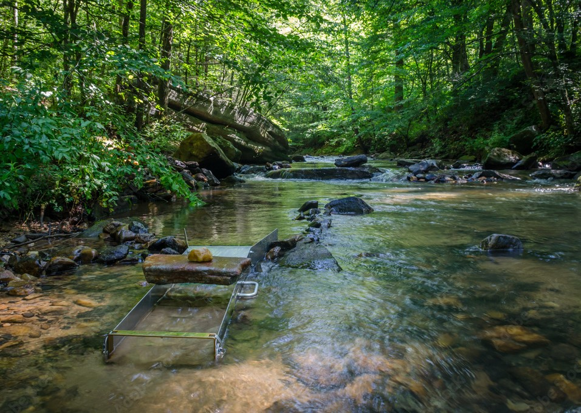
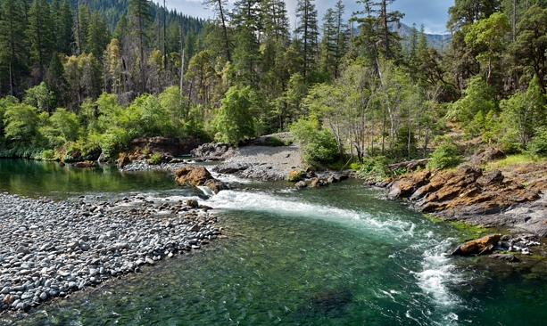
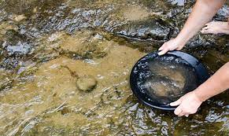
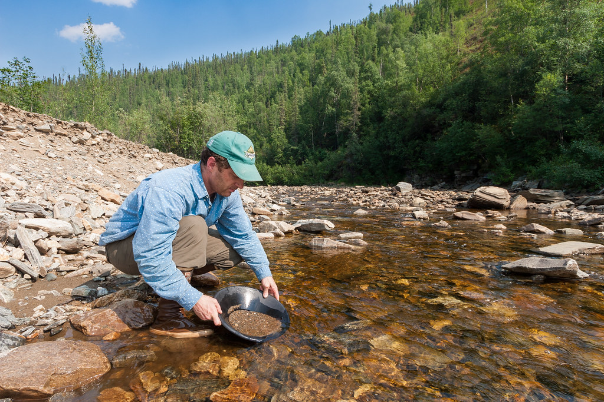
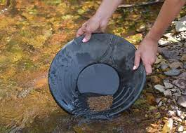
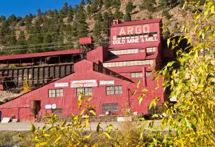

Prospecting Nature's Treasures A Beginer's Guide to Gold Panning
What is Gold Panning

Gold panning is a recreational activity and hobby that involves sifting through riverbed sediments to find small gold flakes or nuggets. It's a fun and rewarding way to connect with nature while searching for a valuable treasure.
Supplies for Gold Panning

To get started, you'll need a gold pan, preferably a 10-14 inch diameter pan with ridges to trap gold. Additionally, a small shovel, a classifier (sieve), and a vial to store your findings are essential. You may also consider using tweezers for handling tiny gold particles.
Where to Pan for Gold

Look for areas with active or historic gold mining, such as rivers, streams, or creeks. Public lands, national forests, and Bureau of Land Management sites often permit gold panning. Research local regulations and join a local gold prospecting club for guidance.
How to Pan for Gold

Fill your pan with riverbed sediment.
Submerge and agitate to wash away lighter materials.
Shake and tilt to let gold settle at the bottom.
Remove larger rocks, keeping the heaviest materials.
Swirl to separate black sands and concentrate gold.
Steps to Gold Panning

Find a suitable location with the potential for gold deposits.
Acquire the right equipment and tools.
Learn proper panning techniques through practice and guidance from experienced panners.
Places to Pan for Gold

American River, Kern River, and Feather River.
Arkansas River, Clear Creek, and Cache Creek.
Chicken, Hatcher Pass, and Nome.
Respect nature and the environment while panning, leaving no trace behind.